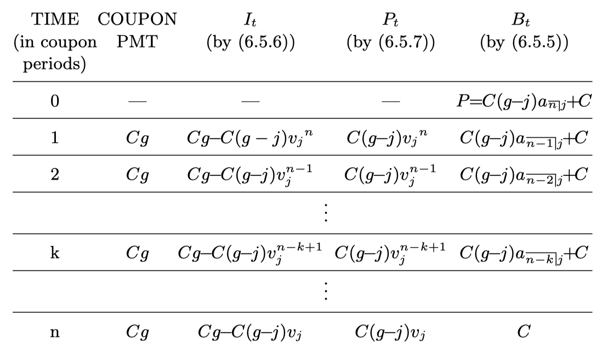

Here we reserve the letter \(i\) for an annual effective yield rate, and use \(j\) for the investor’s effective yield rate per coupon period.
We also define the discount factor per coupon period as \(\displaystyle v_j = \frac{1}{1 + j}\). Let \(\displaystyle G = \frac{Fr}{j}\), and call \(G\) the base amount.
Now, the coupon amount equals \(Fr = Cg = Gj\).
Let \(P\) be the price paid for the bond by the investor if \(j\) is the desired yield rate per period.
Question How to compute \(P\)?
where \(K = C v_j^n\) is the value of the redemption amount at the issue date (time 0).
Read:
Recall that
and also the basic price formula, \(\displaystyle P = (Fr) a_{\overline{n}|j} + C v_j^n\).
Using the fact that \(Fr = Cg\), we have \(\displaystyle P = (Cg)a_{\overline{n}|j} + C(1- j a_{\overline{n}|j})\), and thus,
which is known as the premium-discount pricing formula for a bond.
If \(P > C\), we say that the bond sells at a premium.
The value \(P - C\) is called the premium or amount of premium for the bond, i.e.,
It is obvious that a bond sells at a premium if and only if \(g>j\).
If \(C > P\), we say that the bond sells at a discount.
The value \(C - P\) is called the discount or amount of discount for the bond, i.e.,
It is obvious that a bond sells at a discount if and only if \(j > g\).
Find the price of a \(1,000\) par value \(10\text{-year}\) bond with coupons at \(8.4\%\) convertible semiannually, which will be redeemed at \(1,050\). The bond is bought to yield \(10\%\) convertible semiannually.
First of all, identify the parameters \(F, C, r, g, j, n, K\) and \(G\).
\(F = 1000, C = 1050\)
\(r = \frac{0.084}{2} = 0.042, g = \frac{1000}{1050}\cdot 0.042 = 0.04\)
\(j = \frac{0.1}{2} = 0.05, n = 20\)
\(K = 1050 \cdot 1.05^{-20} = 395.7340\)
\(G = \frac{0.042}{0.05}\cdot 1000 = 840\).
A \(7.5\text{-year}\) \(14\%\) bond with a face value of \(2,500\) has semiannual coupons and is sold to yield \(7.2\%\) convertible semiannually. The discount on the bond is \(283.12\). Find the price of the bond.
Solution
Let \(D = 283.12\) be the amount of discount. Then we have
Use substitution, we obtain \(\displaystyle P = \frac{F r a_{\overline{n}|j} + D v_j^n}{1 - v_j^n}\).
Since \(F = 2500, N = 7.5, m = 2, n = Nm = 15, \alpha = 0.14, r = \alpha/m, j = 0.072/2\), and \(v_j = 1/(1 + j)\), we finally have \(P = 5265.69\).
Recall that \(\displaystyle a_{\overline{n}|j} = \frac{1 - v^n_j}{j}\), and \(\displaystyle P = Fr \left( \frac{1 - v_j^n}{j} \right) + Cv_j^n\).
We replace the coupon amount \(F r\) by the alternative expression \(Gj\), then
which is called the base amount formula.
Interpretation of \(G\): since \(\displaystyle G = \frac{Cg}{j}\), we can consider \(G\) as the present value of a perpetuity paying \(Cg\) forever at interest rate \(j\).
An eight-year bond has annual coupons and a redemption value of \(2,338\). It is purchased to yield \(9\%\) and each coupon is for \(63\). Use the base amount formula to calculate the price of the bond.
Solution
Recall again \(\displaystyle P = Fr \left( \frac{1 - v_j^n}{j} \right) + Cv_j^n\).
If we substitute the product \(Cg\) for \(Fr\) in the equation above, we find
Note that \(K = Cv_j^n\), thus we have the Makeham’s formula:
This formula is useful when the present value \(K\) of the redemption amount is known but the number of coupons \(n\) has not be given.
A \(2,000\) bond with coupon rate of \(10\%\) payable quarterly is redeemable after an unspecified number of periods for \(2,250\). The bond is bought to yield \(8\%\) convertible quarterly. If the present value of the redemption is \(869.71\), find the purchase price.
Solution using Makeham’s formula
Read: The bottom of page 275 for the solution without the Makeham’s formula.
From the basic price formula:
From the premium-discount formula:
Therefore,
Hence, \(I_t + P_t = Cg\), i.e., the coupons consist of the payment of interest due and the repayment of principal.
At a premium:
If \(g>j\), i.e., a bond sells at a premium, then \(P_t\) is positive for every \(t\). So, \(P_t\) is a portion of the coupon which compensates the investor for the premium initially paid for the bond and the rest goes towards the interest payment on that premium.
At a discount:
If \(j>g\), i.e., a bond sells at a discount, then \(P_t\) is negative for every \(t\). Thus, not even the interest due on the balance can be covered by the coupon payments meaning that the remainder of the interest due is added onto the outstanding loan balance which increases as time goes by.
\(P=C\): \(P_t = 0\) for all \(t\).

Recursion formula: \(B_t = (1 + j)B_{t-1} - Cg\).